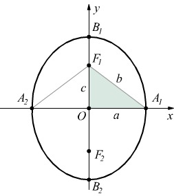

Come nasce l'ellisse: Le coniche, tra cui l'ellisse, furono studiate dagli antichi Greci. Fu Apollonio a fornire la descrizione completa nel suo celebre Coniche, definendo l'ellisse come l'intersezione di un cono con un piano inclinato che non taglia la base del cono. Con Cartesio, l'ellisse venne espressa tramite equazioni cartesiane, aprendo la strada alla rappresentazione analitica delle curve. Matematici come Keplero, Newton ed Euler ne approfondirono le proprietà, soprattutto in relazione alle orbite planetarie e alla gravitazione universale.
Architettura e acustica:
L'ellisse è usata per creare cupole e archi armoniosi, poiché distribuisce le forze in modo uniforme — come nella Cupola di San Pietro di Michelangelo.
Veniva inoltre impiegata per migliorare l'acustica nei teatri antichi.
Applicazioni moderne:
L'ellisse è fondamentale per calcolare la posizione GPS: la distanza costante dalla sorgente definisce curve ellittiche che aiutano a triangolare la posizione.
Alcuni orologi solari tracciano curve ellittiche in base all'inclinazione dell'asse terrestre.
Molte strutture biologiche (cellule, organi, orbite oculari) hanno forma ellittica, utile per modelli di crescita e simulazioni mediche.
Le orbite di Keplero:
Keplero scoprì che i pianeti si muovono attorno al Sole seguendo orbite ellittiche, con il Sole in uno dei fuochi.
Questa intuizione rivoluzionò la cosmologia e divenne la Prima Legge di Keplero.
Le orbite ellittiche descrivono anche il moto di satelliti artificiali e di corpi celesti legati gravitazionalmente, come comete e lune.
Clicca la porta per approfondire gli esperimenti di Keplero.